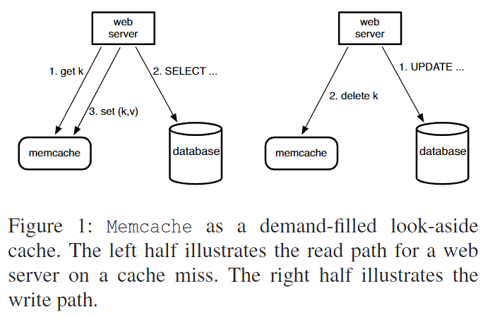
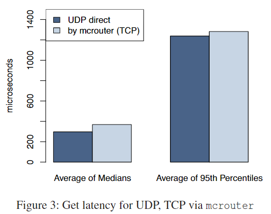
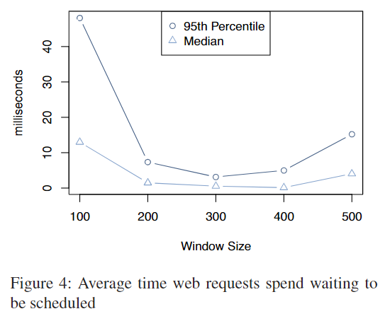
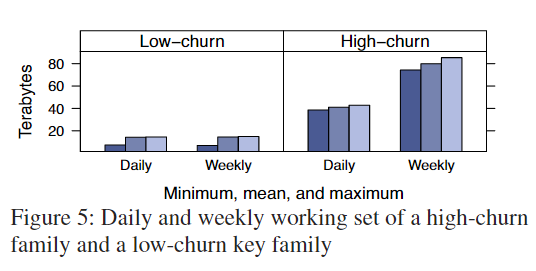
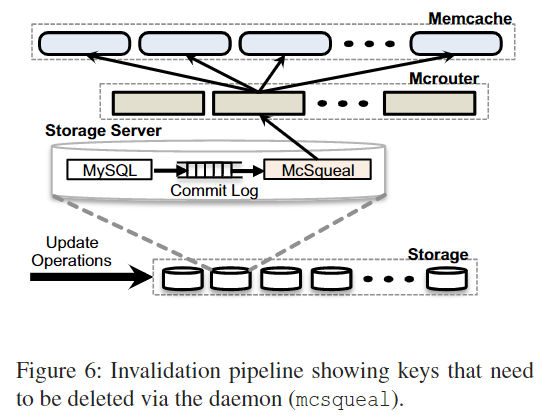
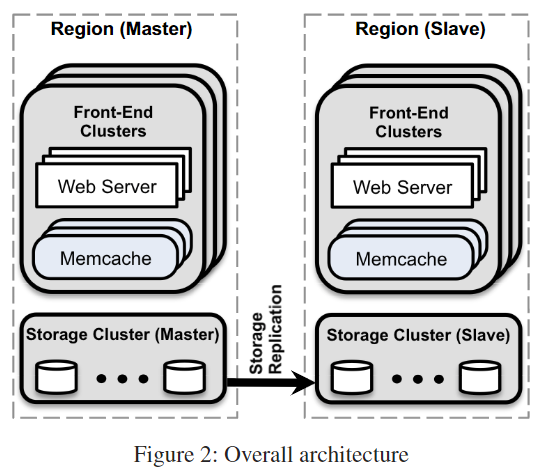

6.824 的第十二篇论文基于 Memcache——一款高性能的分布式内存对象缓存系统，以低成本提供对共享存储池的低延迟访问。Facebook 扩展了 Memcache 的架构，大大提高了性能与内存效率。
Facebook 的业务场景中决定了其工作负载以读取为主，在该情况下对数据进行缓存拥有显著优势。此外，其读取操作从多种来源（MySQL、HDFS 等）获取数据，这种异构性需要一种灵活的缓存策略，能够存储来自不同来源的数据。之所以选择 Memcache 是因为其提供的 api 简单（Get, Set, Delete）。
memcache 的相关操作如下图所示。

- 当 Web Server 读取数据时，它首先访问 memcache，仅当未命中时才用
SELECT语句访问 db，并重新插入 cache； - 当 Web Server 写入数据时，它会用
UPDATE语句更新 db，接着删除 memcache 中的旧值（下次访问该 key 时才会重新写回 memcache，保证幂等性）。这种按需填充的策略有效减轻了读取负载。此外，将 cache 层与 persist 层分开允许根据工作负载变化独立调整每个层。
FB 优先考虑两个主要设计目标：
- 任何更改都必须针对用户或操作问题，很少考虑范围有限的优化；
- 将读取瞬态数据的可能性作为参数进行调整。FB 通过略微公开旧数据，以降低后端存储服务的负载。
下文使用 memcached 来引用源代码或运行二进制文件，使用 memcache 来描述分布式系统。
集群层次：延迟与负载
降低延迟
memcached 的响应延迟是影响用户请求响应时间的关键因素。
尽管集群中提供了数百个 memcached server, ms 以减少负载，但 Web server 必须定期与多个 ms 通信以交换数据。这种通信模式可能会导致 Incast 拥塞，或是任意单个 ms 成为短板。Replication 通常可以缓解短板问题，但总会导致显著的内存效率低下。
FB 主要通过关注在每个 Web server 上运行的 memcache client, mc 来降低延迟。mc 维护所有可用 ms 的映射，并通过辅助配置系统进行更新。
并行请求和批处理：构建 Web app 代码以最小化响应页面请求所需的网络往返次数。通过一个 DAG 表示数据之间的依赖关系。Web server 使用此 DAG 来最大化可以同时获取的数据数量。
Client-Server 通信：ms 只与 mc 使用 UDP/TCP 进行通信。client 拥有一个称为 mcrouter 的独立代理。此代理提供了一个 ms 接口，并对网络消息进行路由。
- client 依靠 UDP 允许线程绕过 mcrouter 执行
Get请求以减少延迟和开销，UDP 只处理错误而不进行恢复。若Get错误，client 会认为 memcache 未命中，但 Web server 将在查询数据后跳过插入，以避免增加负载。 - 由于需要确认状态更改，client 依靠 TCP 通过 mcrouter 执行
Set/Delete请求以提高可靠性。
下图表示通过 UDP 和通过 TCP 获取 key 的延迟。

- client 依靠 UDP 允许线程绕过 mcrouter 执行
Incast 拥塞：client 使用滑动窗口机制来控制未完成请求的数量。当 client 收到响应才可以发送下一个请求，此滑动窗口的大小会随着请求的成功而缓慢增长。
下图显示了窗口大小对用户请求处于可运行状态但等待在 Web server 中进行调度的时间量的影响：窗口过小，应用将发送更多组连续的 memcache 请求，从而增加 Web 请求的持续时间；窗口过大，同时到达 memcache 请求的数量更多，导致 Incast 拥塞。
一系列用户请求的到达呈现为泊松过程。假设输入请求率是恒定的，则根据 Little Law: L = λW ，服务器中排队的请求数 (L)与处理请求所需的平均时间(W)成正比。

降低负载
Lease
lease 的提出是用来解决以下两个问题：
- 失效集：对 memcache 的并发更新被重新排序时，会导致 memcache 中的值并不是最新值。
- 惊群效应：当对一个特定的 key 进行大量的 RW 活动时，反复 write 会删除 memcache 中的值，导致许多 read 默认使用成本更高的路径——访问数据库而非 cache。
当 client 遇到 cache miss 时，memcached 向 client 分配一个与 key 绑定的 lease。memcached 会检测尝试写回数据的 client 是否持有 lease 从而判断是否能够将数据写回。如果在这之前 memcached 收到对 key 的 Delete 操作，则 lease 失效。
通过定期分配 lease 来解决惊群效应——一般是每 10s——如果 client 在预计时间点之前发起请求，则会等待，而再次尝试时，数据已经存入 cache 中了，便无需访问数据库。这样可以大幅度减少 client 等待时间。
- 旧值：在某些情况下返回旧值能够进一步减少这一等待时间。有一个数据结构暂存近期被删除的值，但很快就会被刷掉。
Get或是返回 lease，或是返回这些被标记为过时的数据。可以继续向前推进的应用不需要等待从数据库中获取的最新值。
Memcache Pool
不同应用的工作负载在共享存储时会对彼此产生负面干扰，从而降低命中率。可以通过将集群的 ms 划分到不同的池中，具有相似工作负载的 ms 共享同一个池。下图为两个不同负载的工作集。

Replication with pools
若池满足以下条件：
- 应用同时请求许多 key；
- 整个数据集能够放在一个或两个 ms 中；
- 请求率远高于单个 ms 可以承受的水平。
则可以选择在池中复制某一类 key 来降低 ms 的延迟并提高效率。
故障处理
无法从 memcache 中获取数据会导致后端服务负载过重，这可能会导致进一步的级联故障：
- 网络或服务器故障导致少量主机无法被访问；
- 大规模故障导致集群中大部分服务器宕机。
发生小规模故障时，恢复需要一定时间，却足以导致上述级联故障。于是设置一组名为 Gutter 的机器专门来应对这种场景——接管那些故障服务器的职责。
- 当 client 未收到请求的答复时，它认为相应 ms 故障，接着重新将请求发送至 Gutter Pool；
- 如果此请求仍未命中，client 将在查询数据库后将适当的 kv 对插入到 Gutter 机器中，这些 kv 对的有效期很短，以防止 Gutter 无效。
区域层次：复制
单纯通过增加服务器来扩展集群而不扩展系统并不能解决负载问题。需要将 web server 和 memcached server 拆分为多个前端集群(Frontend Cluster, FC)，与存储集群(Storage Cluster, SC)一起组成了一个 region。
区域无效化
SC 拥有数据的最新版本，FC 拥有数据复制，SC 负责发送 cache 无效化(invalidation)命令来保持一致性。修改 SC 的 SQL 语句会附上需要在事务提交后无效的 memcache key。每个数据库中都有一个 mcsqueal 来检查其数据库提交的 SQL 语句，提取 Delete 并广播到该 region 中每个 FC 中的 ms。如下图所示。

- 减少数据包率：mcsqueal 直接与 ms 通信会浪费网络资源。通过将数据包发给 mcrouter，然后 mcrouter 将这些数据包发给 ms 是个比较好的解决方案。
- 通过 web server 进行无效化：不让 Web server 直接向所有 FC 广播 invalidation 是因为
- Web server 在批量处理方面效率低，开销大；
- 当系统层面的 invalidation 问题（如错误路由删除和配置错误）发生时，依靠 mcsqueal 的补救措施更简单。
区域池
若每个集群都持有数据的副本，则会导致内存效率低下。可以让多个 FC 共享相同的多个 ms，称为区域池。
冷集群预热
新集群加入时为空缓存的“冷集群”，大部分请求（因为 cache miss）都会指向数据库。Cold Cluster Warmup 系统允许“冷集群”中的 client 从“热集群”中获取数据，从而使得“冷集群”的 Cache 尽快填满。
然而当冷集群中的客户端 A 更新数据库，同时另一个客户端 B 在热集群收到 invalidation 之前从热集群中请求旧值时，会产生不一致性。memcached 选择在 Delete 后指定的延迟时间（默认 2s）内拒绝 add操作。
当在冷集群中 cache miss 时，client 从热集群重新请求 key 并将其添加到冷集群中。
add失败表明数据库上有更新的数据，因此 client 将从数据库中重新请求值。
跨区域：一致性
在多个地理位置部署数据中心有以下好处：
- 将网络服务器放置在更靠近最终用户的位置可以显著降低延迟；
- 地理多样性可以减轻自然灾害或大规模停电等事件的影响；
- 新位置可以提供更便宜的电力和其他经济激励措施。
FB 将跨区域系统架构设计为一个 master region 管理 primary DB，其他 slave region 管理 ReadOnly 的 replica，如下图所示。

这一方案往往会因为 replicas 滞后于 primary 而产生不一致性问题。FB 的设计理念为：尽最大努力提供最终的一致性，但强调性能和可用性。
从主区写入：通过 mcsqueal 发送 invalidation 的策略避免了 invalidation 在更新数据之前到达。
考虑在 master 中的 Web server 更新完数据库，但修改尚未发送到 backup，在此之前抢先发送 invalidation 会与后续对 backup 数据的查询发生竞争，从而增加将旧数据写入 memcache 的概率。
从非主区写入：若一个用户更新了非主区域的数据，如果复制延迟过大，一旦最近的更改丢失，其下一个请求可能会出错。因此只有在复制完毕后才允许从 replica db 重新填充 memcache。
FB 采用 remote mark 机制来最小化读取旧数据的概率。若本地的数据被打上标记，表明该数据可能是旧的，并且查询应该被重定向到 master。当 Web server 更新 key 对应的 value 时：
- 在 region 中设置标记 \(r_k\)；
- 将 k-v 写入 master，并指明 key 和 \(r_k\) 无效
- 删除本地集群中的 key。
在后续请求 key 时，若 cache miss 且 \(r_k\) 存在，则将查询重定向到 master 或本地区域。